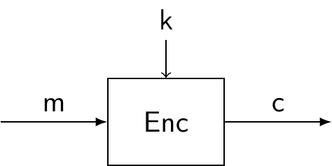
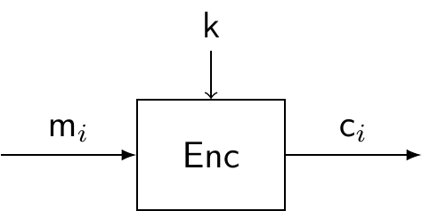
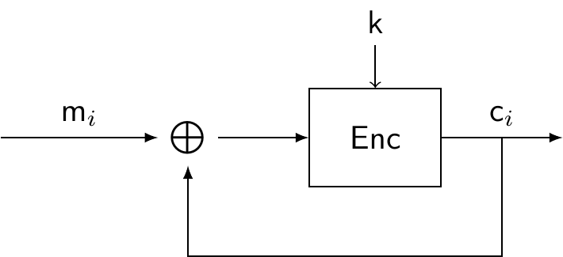
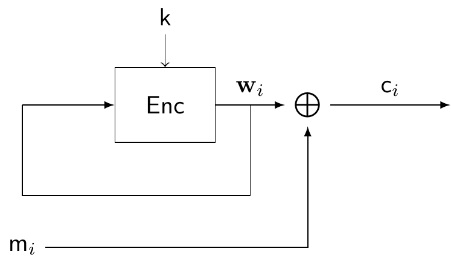
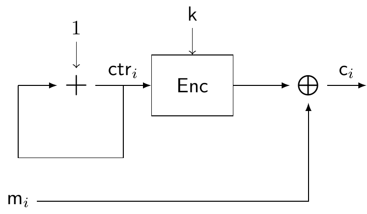

3 Block ciphers
In this section, we focus on block ciphers, which are a more popular alternative to stream ciphers. Block ciphers are interesting not only for encryption, but they also have some interesting theoretical implications, since many other cryptographic primitives (like pseudorandom generators) can be built from block ciphers. In this section, we will learn:
What is a block cipher, and what are the properties of a good block cipher;
The different modes of operation of a block cipher;
Two prime examples of block ciphers: DES and AES.
3.1 Overview of block ciphers
Recall that the one-time pad, and stream ciphers in general, encrypt bits one by one. In contrast, block ciphers will split our plaintext in blocks of fixed length, and encrypt each of this as a single unit.
Definition 3.1 A block cipher of length \(\ell\) is an encryption scheme that encrypts a message of fixed length \(\ell\).
When encrypting an arbitrarily large message, we will split it into blocks of length \(\ell\) and encrypt each block, using the same key, unlike in the previous section where we tried to stretch the key. Because of this, we will require a good block cipher to satisfy two new properties, that we informally describe below:
Confusion: each bit of the ciphertext depends on several parts of the key. In other words, the relation between key and ciphertext must not be clear to any attacker.
Diffusion: small changes in the plaintext result in significant changes in the ciphertext. More precisely, in any modern block cipher, it is expected that a single bit change in the plaintext should result in at least half of the bits of the ciphertext changing.
Later in this section, we will see some concrete examples of block ciphers used in practice. For now, let us assume that we already have some block cipher \[(\mathsf{KeyGen},\mathsf{Enc},\mathsf{Dec}),\] that we will use as a black box. That is, for now we do not know what happens inside each of the algorithms, only that they work and they are secure. For example, we assume that \(\mathsf{Enc}\) takes as input a plaintext \(\mathsf{m}\) of length \(\ell\) and produces a ciphertext \(\mathsf{c}\) corresponding to \(\mathsf{m}\). We represent this by the diagram

This will allow us to discuss block ciphers in a more general way.
3.2 Modes of operation
Assume that we want to encrypt a message \(\mathsf{m}\) of length \(\ell n\) with a block cipher. When the message length is not a multiple of the block length, some extra bytes are added to complete the last block. This is called padding.11 We start by splitting the message in blocks \[\mathsf{m}_1,\dots,\mathsf{m}_n,\] each of them of length \(\ell\), so that they can be fed into our block cipher. The question is: do we encrypt each block in parallel? Is that secure? Or should we somehow make the blocks influence each other? The way we proceed here is determined by the mode of operation that we choose.
3.2.1 Electronic codebook (ECB) mode
In ECB mode, we take the most straightforward approach, and encrypt each block on its own: \[\mathsf{c}_i=\mathsf{Enc}_k(\mathsf{m}_i).\] The ECB mode is represented in the following diagram: 
The main advantage of this approach is that, since each block is independent, we can make the operations in parallel, potentially saving computation time.
However, this mode presents several weaknesses. For example, since each block is encrypted in exactly the same way, two identical messages result in two identical ciphertexts. So an eavesdropper can see when the same message was sent twice. Even if he does not know the content, this provides the attacker with some partial information, which is something that we would like to avoid.
Furthermore, the ECB mode is particularly bad when encrypting “meaningful” information. A very visual example comes from encrypting an image. Assume that we split the image into small squares of pixels, so that the bit length of each of these matches the length of our block cipher, and then use ECB-mode encryption on each square. Below you can see the result on an example image.12


Because the blocks are encrypted independently, a human eye can still easily distinguish the underlying information. This illustrates ECB mode’s lack of diffusion.
3.2.2 Cipher block chaining (CBC) mode
So we have seen that we want our blocks to interact in some way. To achieve this, the CBC mode takes the following approach: the idea is to create a feedback loop, in which each ciphertext produced by the block cipher is fed back into the input of the next iteration, by computing the \(\mathsf{XOR}\) with the new input. More precisely: \[\mathsf{c}_i=\mathsf{Enc}_k(\mathsf{m}_i\oplus \mathsf{c}_{i-1}).\] The CBC mode is represented in the following diagram: 
Note that this does not work for the first block, since there is no previous ciphertext, and so we introduce something to replace it, which we call the initialization vector (often denoted by IV). By choosing the IV at random, we also introduce randomness in our scheme, making the procedure non-deterministic. Observe also that, due to the recursive nature of the definition, the encryption of a block is not only influenced by the previous block, but by every block that came before, and also the IV. There is no need for the IV to be secret, although it should not be reused, so if a new encryption sessions starts, a new IV should be chosen.
With this approach, we achieve a much higher diffusion. Looking again at the same picture, the result is now very different:
This is due to the fact that the encryption of each block influences the next. Thus, two identical blocks (for example, two squares of white in the corner of the picture) do not produce the same output anymore. The downside of this approach is that, since we need a ciphertext before we can compute the next, we cannot parallelize the computations.
3.2.3 Output feedback (OFB) mode
The next mode of operation actually turns a block cipher into a stream cipher, by recomputing a key each time through the \(\mathsf{Enc}\) algorithm. That is, it is a stream cipher in which the key stream is produced in blocks of length \(\ell\): \[\begin{aligned} & \mathbf w_i = \mathsf{Enc}_k(\mathbf w_{i-1}), \\ & \mathsf{c}_i=\mathsf{m}_i\oplus \mathbf w_i. \\ \end{aligned}\] The OFB mode is represented in the following diagram:

Again, we need an IV to feed into \(\mathsf{Enc}\) in the first iteration. Observe that the block cipher and the feedback loop do not involve the message at all, which is simply \(\mathsf{XOR}\)’ed with the result of each iteration of the loop to produce the ciphertext, as in any stream cipher.
While, as the CBC mode, the computation cannot be performed in parallel, the fact that the loop does not depend on the message at all allows us to pre-compute a bunch of key blocks in advance, for later use with a message.
3.2.4 Counter (CTR) mode
Similarly to the OFB mode, the CTR mode produces a stream cipher from a block cipher. It works by keeping a public counter \(\mathsf{ctr}\) that is chosen randomly, and is increased by \(1\) after each iteration. The counter works as an IV that updates after encrypting each block. \[\begin{aligned} & \mathsf{ctr}_i = \mathsf{ctr}_{i-1}+1, \\ & \mathsf{c}_i=\mathsf{m}_i\oplus \mathsf{Enc}_k(\mathsf{ctr}_i). \\ \end{aligned}\] After the last iteration, the current value of the counter is also sent, together with the ciphertext. The CTR mode is represented in the following diagram: 
Exercise 3.1 We have not discussed the decryption procedure of any of the modes of operation. Given a \(\mathsf{Dec}\) algorithm that recovers plaintexts encrypted with \(\mathsf{Enc}\), describe how decryption works for each mode of operation. Recall that the values of the IV and counter are public.
3.3 DES and AES
Now that we know how to use block ciphers, let us look a bit into some of the most famous ones: the Data Encryption Standard (DES), and its successor the Advanced Encryption Standard (AES). DES was designed by a team at IBM in 1974, and became the first official encryption standard in the US in 1977. It remained as the recommended encryption scheme until 1999, when it was replaced by AES.13
3.3.1 Data Encryption Standard (DES)
DES is a block cipher of length \(64\), which uses a key of \(56\) bits. Essentially, it is composed of \(16\) identical rounds, each of them consisting of the following. During each round, a round key \(\mathsf{k}_i\) of 48 bits is derived from the master key. In round \(i\), the algorithm receives \(\mathsf{m}_{i-1}\), the output of the previous round (or the original message, for \(i=1\)), and computes \(\mathsf{m}_i\), the output of the current round. In between, the following step happen:
Split \(\mathsf{m}_{i-1}\) in two halves \(\mathbf L_{i-1}, \mathbf R_{i-1}\) of 32 bits each.
Derive the round key \(\mathsf{k}_i\) from \(\mathsf{k}\).
Set \(\mathbf L_{i}=\mathbf{R}_{i-1}\) and \(\mathbf R_{i}=\mathbf{L}_{i-1}\oplus f(\mathbf R_{i-1},\mathsf{k}_i)\).
Return \(\mathbf m_i=(\mathbf L_i, \mathbf R_i)\)
After round \(16\), the end result \(\mathsf{m}_{16}\) is the ciphertext.
Decryption of DES is almost the same as encryption, starting from the last round key. Observe that one half of the input of each round is not encrypted, just moved around, and so in total each half of the plaintext is encrypted \(8\) times by \(\mathsf{XOR}\)’ing it with a function of the round key. There are a couple of details that we have not specified yet:
How to derive round keys from the master key \(\mathsf{k}\). Without getting into much detail, the \(\mathsf{k}_i\) is obtained from \(\mathsf{k}\) by performing some rotations and permutations on the positions of the bits, and then some bits are ignored.
How the function \(f\) works. First, the function expands the 32-bit input \(\mathbf R_{i-1}\) to a 48-bit string, by repeating some of the bits in specified positions. The result is then \(\mathsf{XOR}\)’ed with the round key \(\mathsf{k}_i\). The result from this operation is then split into \(8\) blocks of \(6\) bits each, and fed into what is known as substitution boxes (S-boxes), which are functions specified by a lookup table. Each box outputs a string of 4 bits, so in total we have a string of \(32\) bits. Finally, the positions of the bits in this string are permuted, and the result is the output of the function \(f\).
The design of the cipher, specially the function \(f\), might look arcane. Indeed, since the design and standardization of DES was not a public process, the reason behind some design choices is still not completely clear. What is known, however, is that the \(f\) function and the \(S\)-boxes were designed to thwart any attack known at the time (and even some that were not known to the public). The takeaway message here is that the \(S\)-boxes and the final permutation play a big role in achieving a good level of diffusion, propagating change through the whole ciphertext in the following rounds. Indeed, we have the following result.
Proposition 3.1 By the end of the fifth round of DES, every single bit of the current ciphertext depends on all the bits of the plaintext and all the bits of the key.
No sophisticated efficient attacks are known against DES to date. However, the key size is simply too small for today’s standards (look again at the table at the end of section 1), and so it was eventually replaced by AES. Some variants of DES, like 3DES, which essentially means applying DES three times in a row, are still in use, and have withstood any attacks so far.
3.3.2 Advanced Encryption Standard (AES)
AES is a block cipher with block length \(128\) bits. Unlike DES, which used \(56\)-bit keys, AES supports keys of bit length \(128\), \(192\) and \(256\), and has between \(10\) and \(14\) rounds, depending on the key length. Moreover, while in DES only half of the block was encrypted in each round, the full block is encrypted in every round now. On a very high level, each round consists of the following steps, called layers:
Key addition layer: a round key of length \(128\) is derived from the master key, in a process called key schedule.
Byte substitution layer: similarly to DES, AES uses \(16\) S-boxes defined by lookup tables, replacing each byte of the message by a new byte specified by the corresponding \(S\)-box. This layer introduces confusion.
Diffusion layer: the position of the bytes are permuted. Then, blocks of four bytes are combined using some matrix operations.
Regarding security, no attack more efficient than brute force is known to date. Thus, the security level provided by AES is \(\lambda\), where \(\lambda\in\{128,192,256\}\) is the bit size of the key.
The following video has a very clear and concise overview of the inner workings of AES.
Let us now demonstrate how AES satisfies diffusion and confusion. To do this we will do the follwoing:
Confusion: Sample a random message of 128 bits and encrypt it with a random key \(k\). Then encrypt it with another key \(k'\) that is the same as \(k\) except that it has a random bit fliped and compare the two ciphertexts.
Diffusion: First encrypt a single AES block of a random message with a key \(k\). Then flip a single bit of the initial message and compare the two ciphertexts.
What is the expected outcome in the experiments? In both cases we would want the two produced ciphertexts to be completly unrelated. That is, the two ciphertext should look like randomly sampled strings (although they are not!). In two random strings, the probability that the \(i\)-th bit is different is 50%. Therefore, we expect that if the properties hold, half of the bits will be different. Note that this is a probabilistic argument and the result concernes the expected value. In other words, repeat the experiment sufficiently many times and the average of changed bits will converge to 64 (=128/2).
We first present a diffusion_confusion_util.sage code snippet that contains two functions:
1. flip_random_bit: flips a random bit from a 16 byte (=128 bit) message,
2. count_bit_diff: counts the bits in which two byte strings differ.
import random
def flip_random_bit(s):
"""
Flips a bit of a 16 byte string as follows:
1. Convert k from bytes to bits,
2. Choose a random position in the range [0,..,127]
3. Flip the bit of that position
4. Change back to bytes
"""
#Convert to bits
s_bits = ''.join(f'{byte:08b}' for byte in s)
# Select a random bit to flip
random_bit_index = random.randint(0, len(s_bits) - 1)
# Flip the selected bit
s_prime_bits = (
# before index it remains the same
s_bits[:random_bit_index] +
# flip index
('1' if s_bits[random_bit_index] == '0' else '0') +
# after index it remains the same
s_bits[random_bit_index + 1:]
)
# Convert back to bytes
s_prime = bytes(int(s_prime_bits[i:i+8], 2) for i in range(0, 127, 8))
return s_prime
def count_bit_diff(b1, b2):
"""
Counts how many bits are different in b1 b2
"""
diff_count = 0
# repeat for each byte
for byte1, byte2 in zip(b1, b2):
# Convert each byte to an 8-bit binary string and compare bit by bit
for bit1, bit2 in zip(f'{byte1:08b}', f'{byte2:08b}'):
if bit1 != bit2:
diff_count += 1
return diff_countWe are now ready to conduct the experiments. To this end we use the AES recipie from the cookbook. Run these experiments to verify that in both experiments the results converge to 64 as expected.
# load the utils and the aes128 recipie
load('diffusion_confusion_util.sage')
load('aes128.sage')
def diffusion_experiment():
"""
Encrypts a random message with AES128 under a key k.
Then flip a bit of m and encrypt the result with k.
Output the number of bits where the two ciphertexts differ.
"""
k = aes_keygen()
# sample a random message of 16 bytes
m1 = b''.join(randrange(0,256).to_bytes() for _ in range(16))
# encrypt the message
c1 = aes_enc(k, m1)
# flip a bit of the message and encrypt
m2 = flip_random_bit(m1)
c2 = aes_enc(k, m2)
# Count the number of bits c1, c2 differ
return count_bit_diff(c1, c2)
def confusion_experiment():
"""
Encrypts a random message with AES128 under a key k.
Then flip a bit of k and encrypt the same message again.
Output the number of bits where the two ciphertexts differ.
"""
k1 = aes_keygen()
# sample a random message of 16 bytes
m = b''.join(randrange(0,256).to_bytes() for _ in range(16))
# encrypt the message
c1 = aes_enc(k1, m)
# flip a bit of the key and encrypt
k2 = flip_random_bit(k1)
c2 = aes_enc(k2, m)
# Count the number of bits c1, c2 differ
return count_bit_diff(c1, c2)
# run n iterations of each experiment
n = 100000
diffusion_result = 0
confusion_result = 0
for i in range(n):
diffusion_result = diffusion_result + diffusion_experiment()
confusion_result = confusion_result + confusion_experiment()
diffusion_result = float(diffusion_result / n)
confusion_result = float(confusion_result / n)
print(diffusion_result)
print(confusion_result)Solved exercises
Exercise 3.2 Consider the following mode of operation: to encrypt a block apply the operation \(\mathsf c_i = \mathsf{Enc_{k}}(\mathsf{Enc_{k}}(\mathsf m_i)\oplus\mathsf m_{i-1})\). Let \(\mathsf m_1,\ldots,\mathsf m_n\) be a message you want to encrypt.
- How would the first message \(\mathsf m_1\) be encrypted?
- How would decryption work?
Solution.
For \(\mathsf m_1\) we don’t have a corresponding \(\mathsf m_0\) to apply formula. We need to send an IV that will be public and correspond to \(\mathsf m_0\). Simply set \(\mathsf m_0 = \text{IV}\) for a random IV and apply the formula.
In this type of exercises, you should always keep in mind that you need to “solve” the equation for \(\mathsf m_i\). To “move” stuff in the left and right hand side, use the inverse functions. For \(\mathsf{Enc}\) this should be \(\mathsf{Dec}\) and for \(\oplus x\) it is itself (\(a \oplus x \oplus x = a\oplus 0 = a)\). You should be careful to apply the operations in the correct order. Let’s now start recovering \(\mathsf{m}_i\).
- First we remove the outer encryption layer by applying \(\mathsf{Dec}\) on both sides of the equation. The new equation becomes: \[ \mathsf{Dec_k}(\mathsf c_i) = \mathsf{Enc_k}(\mathsf{m}_i)\oplus \mathsf m_{i-1} \]
- We now move \(\mathsf m_{i-1}\) to the left side by applying in both sides \(\mathsf m_{i-1}\). The new equation becomes. \[ \mathsf{Dec_k}(\mathsf c_i)\oplus \mathsf m_{i-1} = \mathsf{Enc_k}(\mathsf{m}_i) \]
- Finally we can recover \(\mathsf{m}_i\) by “canceling” the encryption of the right hand side. To this end we apply \(\mathsf{Dec}\) on both sides. This gives also the final decryption procedure: \[ \mathsf{m}_i = \mathsf{Dec_k}(\mathsf{Dec_k}(\mathsf c_i)\oplus \mathsf m_{i-1}) \]
Exercise 3.3 You want to encrypt your personal computer’s hard drive. After reviewing the options you have, you decide to use AES as the block cipher but you are unsure whether it would be better to use CBC mode or Counter mode. What would you choose and why? Note that both modes are secure so there is no security concern.
Solution. Since security is not a concern, you should consider efficiency. How do the modes compares to each other efficiency wise? The crucial observation is that CBC is sequential while Counter mode is not. This means that in order to decrypt the \(i\)-th block using CBC, you need to first decrypt all blocks from \(1\) to \(i-1\). In contrast to that, you can directly use Counter mode to decrypt it. Since you certainly wouldn’t want to decrypt a bunch of blocks each time you access the \(i\)-th block, Counter mode is the clear choice.
Note also that since Counter mode is not sequential, you can also encrypt/decrypt blocks in parallel.
Exercise 3.4
You are using a block cipher with counter mode to encrypt a message consisting of \(n\) blocks. The \(i\)-th block is corrupted during transit (some bits are flipped). Which blocks would be affected by that?
What would have happened if you used CBC mode instead?
Solution.
First, let’s recall how decryption of counter mode works. To decrypt the \(j\)-th block, we compute \(\mathsf{m}_j=\mathsf{c}_j\oplus\textsf{Enc}_k(\mathsf{ctr}_j)\). This means each ciphertext is not affected by the previous and next ciphertexts. Thus, only the \(i\)-th block corresponding to \(\mathsf{m}_i\) will not be correctly decrypted.
First, let’s recall how decryption of CBC works. To decrypt the \(j\)-th block, we compute \(\mathsf{m}_j=\textsf{Dec}_k(\mathsf{c}_j)\oplus \mathsf{c}_{j-1}\). For the message to be correct, both the values \(\mathsf{c}_j\) and \(\mathsf{c}_{j-1}\) need to be correct. In our case, we have a corrupted \(\mathsf{c}_i\) block. This means that when \(j=i\) and when \(j-1=i\) we will not retrieve the correct plaintext. Equivalently, we will retrieve wrong messages \(\textsf{m}_{i}'\neq\textsf{m}_{i}\) and \(\textsf{m}_{i+1}'\neq\textsf{m}_{i+1}\). All other messages will be correctly decrypted.
Exercise 3.5 You use the counter mode but decide to make a modification (spoiler alert: this is almost never a good idea!). Instead of picking a random IV, you always start with \(IV = 1\). Is your custom mode of operation secure? Why?
Solution. This custom mode is not secure! The problem is that you use the same IV each time you encrypt a message. Consider for simplicity the case where you encrypt two messages \(\mathsf m = (\mathsf m_1, \ldots, \mathsf m_n)\) and
\(\mathsf m' = (\mathsf m'_1, \ldots, \mathsf m'_n)\). An adversary sees the two corresponding ciphertexts. It now knows that
\[
\mathsf c_i = \mathsf m_i \oplus \mathsf{Enc_k} (i),\qquad
\mathsf c'_i = \mathsf m'_i \oplus \mathsf{Enc_k} (i)
\]
XORing the two ciphertexts, it can learn the XOR of the two plaintexts! Indeed,
\[
\begin{aligned}
\mathsf c_i\oplus \mathsf c'_i
&= \mathsf m_i \oplus \mathsf{Enc_k}(i)\oplus \mathsf m'_i \oplus \mathsf{Enc_k}(i) \\
&= \mathsf m_i \oplus \mathsf m'_i \oplus \mathsf{Enc_k}(i)\oplus \mathsf{Enc_k}(i) \\
&= \mathsf m_i \oplus \mathsf m'_i
\end{aligned}
\]
Note that this type of attack has other implications as well. You should make sure that each counter is not used twice. Therefore the block should be large enough so the probability that you use the same counter is negligible as long as you sample it randomly.
Exercise 3.6 Recall that OTP is not secure if you use the same key twice.
If you use the same key to encrypt a message \(\mathsf m_1,\ldots,\mathsf m_n\) with OTP, what mode of operation are you using?
You decide to use OTP as the block cipher in CBC mode. That is, you pick a random key \(\mathsf{k}\) and use \(\oplus \mathsf k\) as the block cipher function. Is this a secure approach?
Solution.
This corresponds to the ECB mode. By definition, the ECB mode applies the same block cipher in parallel.
This is not a secure approach. It suffers from the problems that we encountered when using OTP with the same key. Let us be more concrete. To encrypt a message you do the following:
\[ \mathsf c_i = \mathsf{Enc}_k(\mathsf m_i \oplus \mathsf c_{i-1}) = \mathsf m_i \oplus \mathsf c_{i-1} \oplus \mathsf k \] Now, consider the next block. It’s encryption would be \[ \mathsf c_{i+1} = \mathsf m_{i+1} \oplus \mathsf c_{i} \oplus \mathsf k \] Substituting \(\mathsf{c}_i\) we get
\[ \begin{aligned} \mathsf c_{i+1} &= \mathsf m_{i+1} \oplus \mathsf m_i \oplus \mathsf c_{i-1} \oplus \mathsf k \oplus \mathsf k \\ &= \mathsf m_{i+1} \oplus \mathsf m_i \oplus \mathsf c_{i-1} \end{aligned} \] and therefore \[ \begin{aligned} \mathsf c_{i+1} \oplus \mathsf c_{i-1} = &= \mathsf m_{i+1} \oplus \mathsf m_i \end{aligned} \] and therefore we can learn the XOR value of each block.
One must be careful when choosing padding, as some choices are vulnerable to certain attacks in some modes of operation. An example of this is the padding oracle attack: https://en.wikipedia.org/wiki/Padding_oracle_attack.↩︎
Source: https://en.wikipedia.org/wiki/Block_cipher_mode_of_operation. Images by Larry Ewing (lewing@isc.tamu.edu) and GIMP (https://www.gimp.org/).↩︎
Some interesting bits of history around DES and NSA involvement can be found in Chapter 3 of Christof Paar and Jan Pelzl. Understanding cryptography: a textbook for students and practitioners. Springer Science & Business Media, 2009..↩︎